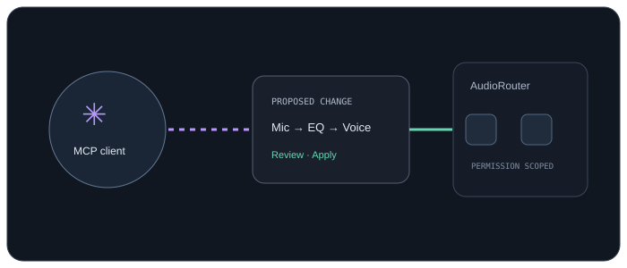

Understand a route
List sessions, inspect connected sources and destinations, check devices, and read the current status.
Connect an MCP client to AudioRouter's local tools. Discover the setup, explain the signal path, and make targeted changes within the permissions you grant.

MCP is an interface to AudioRouter's backend. It does not receive raw microphone audio.
List sessions, inspect connected sources and destinations, check devices, and read the current status.
Ask for an effect, mixer input, or connection. Inspect the intended change before applying it.
Play or stop, change a node, manage recording, mute privacy, or inspect operation status.
AudioRouter runs its MCP server as a local stdio process through its installed CLI. It uses the same backend as the app and does not add another audio engine or cloud service.
ChatGPT's standard remote connector form expects a remote URL. Secure MCP Tunnel is the local-server path. Write-capable MCP access depends on your ChatGPT plan and workspace settings.
OpenAI connection and tunnel guide ↗audiorouter-cowork-local in AudioRouter's Client permissions.Export starts with read-only access and preserves existing grants. Cloud Cowork tasks cannot launch this local MCP server, even from the desktop app; organization policy may also disable local plugins. The ZIP contains configuration for this PC, not keys or audio.
Anthropic plugin guide ↗The backend enforces the same permission scopes for MCP, CLI, and API clients. Reads, graph edits, device administration, plugin scanning, and recording use distinct scopes.
Ambiguous device names need a choice. An inspection request does not arm a recorder. AudioRouter shares configuration and summarized telemetry with tools; it does not stream raw microphone audio to the model.
Read the headless runbook ↗Open the MCP tab for current setup details.